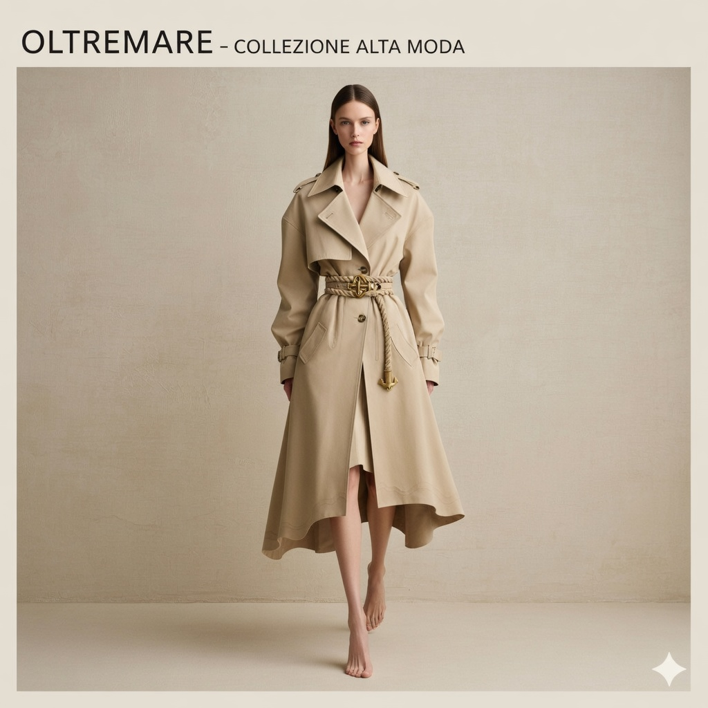
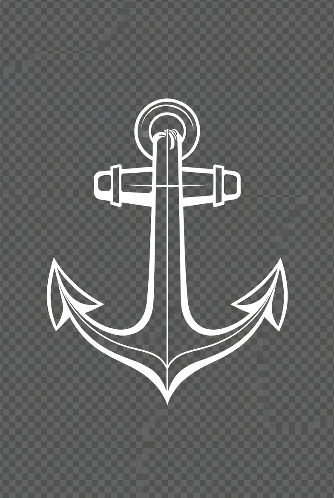

Linea Mare
Pensata per il viaggio breve
Forme morbide, capienza generosa e una presenza silenziosa. La Linea Mare e pensata per spostamenti di due o tre giorni, con interni ordinati e un'impronta visiva sobria.
Pelletteria artigianale italiana
Pelle italiana, linee essenziali e dettagli che portano il mare nella vita quotidiana.
Le Nostre Linee
Ogni linea nasce da un equilibrio tra funzionalita, materiali selezionati e un'estetica sobria.
Artigianato
OltreMare sviluppa pezzi pensati per accompagnare gli spostamenti quotidiani e i viaggi brevi. Le linee si distinguono per funzione, ma condividono la stessa attenzione per pellami, proporzioni e finiture.

Linea Mare
Forme morbide, capienza generosa e una presenza silenziosa. La Linea Mare e pensata per spostamenti di due o tre giorni, con interni ordinati e un'impronta visiva sobria.
Linea Porto
Dimensioni compatte, peso contenuto e costruzione precisa. Porto interpreta l'idea della borsa da citta con una palette chiara e un profilo molto pulito.


Linea Stella
Stella porta nelle collezioni OltreMare una costruzione piu netta, con dettagli evidenti solo da vicino e una presenza piu decisa senza perdere equilibrio.
Collezione

Mini bag, shoulder bag e tote in pelle.
Capienza essenziale per il weekend e il viaggio breve.

Layer morbidi, volumi puliti e dettagli calibrati.

Maglieria, blazer e capi dal taglio sobrio.
Una selezione di modelli e capi che raccontano il lato piu materico di OltreMare: forme pulite, presenza discreta e un lavoro di finitura che si lascia scoprire da vicino.
Scopri la selezione
Mini bag in pelle chiara
Una silhouette compatta, studiata per l'uso quotidiano, con una presenza elegante e molto leggera.
Weekend bag strutturata
Una borsa capiente, costruita per accompagnare spostamenti brevi con ordine, resistenza e una linea pulita.
Borsa a spalla dal profilo essenziale
Pensata per la citta, combina proporzioni morbide e dettagli misurati per un uso continuativo.
Capi dalla costruzione piu formale
Blazer e layering essenziali che completano la collezione con un accento piu sartoriale.

Il segno piu iconico della collezione
Un modello che concentra l'identita del brand in una forma chiara, leggibile e molto riconoscibile.
Una linea morbida per il fine settimana
Pensata per il viaggio breve, con una costruzione morbida e pratica che resta elegante anche in movimento.
Journal
Materiali, dettagli, processi e storie di collezione. Il journal puo diventare lo spazio editoriale in cui raccontare la costruzione dei pezzi e il mondo visivo del brand.
Richiedi il lookbookContatti
Per appuntamenti in atelier, richieste di collezione, pre-ordini o informazioni dedicate.
Nord Italia · Su appuntamento · Risposta diretta via WhatsApp
Scrivici su WhatsApp